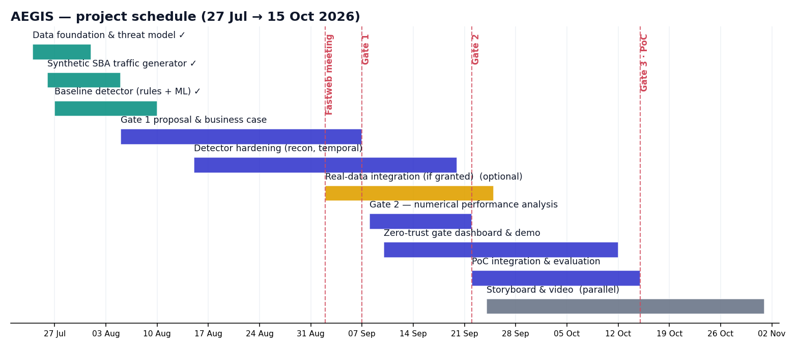

The technology approach, the schedule, and why it's feasible
Gate 1 established the case for AEGIS: what technologies it needed, how the project would be scheduled, whether it was technically feasible, and what the economic case for it looks like.
What AEGIS is built on
5G control-plane surface
The 5G Service-Based Architecture and Service-Based Interface: Network Functions (AMF, SMF, NRF, PCF, UDM, NEF) exposing HTTP/2 REST APIs.
Zero-Trust security
NIST SP 800-207: continuous, per-request verification of machine identities, applied to behaviour rather than credentials alone.
Behavioural ML
Unsupervised anomaly detection (Isolation Forest) trained only on legitimate traffic, combined with deterministic policy rules and a session-state machine.
Detection features
Request rate and timing, distinct Network Functions and endpoints, method mix, call-sequence integrity, error rate, payload size, time of day.
Data & tooling
A synthetic 5G SBA traffic generator, scikit-learn and pandas for modelling, a Streamlit dashboard for the PASS / STEP-UP / BLOCK gate.
Standards
NIST SP 800-207, 3GPP SBA, TM Forum closed-loop automation, aligned with NIS2, GDPR, and the EU AI Act.
From proposal to a working PoC by 15 October

De-risked by a working baseline, not just a plan
Resources are entirely open-source and run on a standard laptop. The main external risk, access to real network traffic, is mitigated by a synthetic-first approach: a working baseline already demonstrated detection across all seven modelled threat classes before Gate 2 hardened and rigorously evaluated it.
| Risk | Mitigation |
|---|---|
| Synthetic data may not capture real agent behaviour | Modelled on 3GPP SBA semantics; the pipeline ingests real logs when available |
| False positives disrupt operations | Held-out calibration plus a soft STEP-UP action before BLOCK; thresholds are tunable |
| Real-data access is not granted | The full PoC is deliverable on synthetic data alone |
| Adaptive or evasive attackers | Layered rules, ML, and a session-state machine; roadmap for periodic retraining |
Why this is worth building
Cost
Development is engineering time only, open-source, no licensing. Production adds modest edge compute for the inline gate.
Risk avoided
Catching a compromised or spoofed automation before it acts cuts mean-time-to-detect from hours to seconds.
Enabler of automation
Zero-trust on machine identities is the guardrail that lets an operator safely expand network automation.
Compliance & audit
Supports a NIS2 zero-trust posture; explainable, logged decisions provide audit evidence for GDPR and the EU AI Act.
Operational efficiency
Automates machine-identity monitoring that cannot be performed manually at API scale.
Market relevance
Securing AI agents on critical infrastructure is an emerging priority; AEGIS covers a gap credential-based AAA doesn't.